1 · Advanced Cardiovascular & Peripheral Vascular Examination
Lecture 5 · Lauren Reynolds, MSPA, PA-C · 17 September 2026 · 115 slides · recorded in three parts, 138 minutes
Instructional Objectives
Advanced Cardiac and Peripheral Vascular System Medical History and Examination
- Review the anatomical landmarks of the cardiovascular system.
- Describe the elements related to interviewing and eliciting a medical history that aid in identifying cardiac disorders.
- Compare and contrast the cardiac cycle with reference to timing of heart sounds and gallops.
- Review the point of maximal impulse and apical impulse.
- Describe the character of the apical impulse with reference to anatomy and ventricular function.
- Review the classic areas of auscultation to assess cardiac sounds.
- Demonstrate the proper clinical skills when using the stethoscope diaphragm and bell with relation to specific heart sounds.
- Identify the physical characteristics of cardiac thrills and murmurs.
- Demonstrate the proper clinical skills for maneuvers to evaluate murmurs.
- Compare and contrast the physical examination findings related to abnormal peripheral arterial and venous function.
- Define the physical examination findings of peripheral edema.
- Demonstrate proper clinical skills for a complete and focused cardiovascular physical examination.
The syllabus letters the eighth objective “f.” a second time, a typing slip between (g) and (i). It is shown here, and referred to below, as (h).
How this lecture signposts
Nothing in 138 minutes was named as on, or off, the exam. Both transcripts of the recording were read end to end, and neither holds a single “this will be tested” or “you don’t need this”. That is a finding, not a failed search: treat the twelve objectives as evenly weighted, and use the two signals the lecture does give — what she repeated, and where the time went.
What she repeated is marked below with ★. The most repeated idea of the whole lecture was a method rather than a fact: describe the sound, never name the disease (section 1.7).
| Block | Slides | Minutes of lecture |
|---|---|---|
| The cardiac history | 4–9 | about 17 (the recording starts partway through slide 5) |
| Blood flow and the cardiac cycle | 10–17 | about 11 |
| Apical impulse and ventricular impulses | 18–24 | about 8 |
| Examination preparation and the areas of auscultation | 25–32 | about 15 |
| Heart sounds, splitting and the extra sounds | 33–44 | about 20 |
| Describing and grading murmurs; thrills | 45–57 | about 13 |
| Maneuvers and hypertrophic obstructive cardiomyopathy | 58–64 | about 10 |
| The murmurs one by one | 65–81 | about 18 |
| The peripheral vascular examination | 82–114 | about 25 |
The peripheral vascular block is a third of the slides but a fifth of the time, and she said why (part 3, 29:02): “You have done the peripheral vascular exam. You’ve done it. Okay, so this is almost entirely review. Whereas the cardiac stuff is a lot of new.”
1.1 · Objective a — Anatomical landmarks of the cardiovascular system
The path of blood is the map every later section reads from:
- Deoxygenated blood from the body (inferior and superior vena cava) → right atrium → tricuspid valve → right ventricle
- Right ventricle → pulmonic valve → pulmonary artery → lungs
- Lungs → pulmonary vein → oxygenated blood to the left atrium
- Left atrium → mitral valve → left ventricle → aortic valve → aorta → rest of the body
The tricuspid is the first valve blood crosses on its way back to the heart. She gave it a mnemonic and then said the point twice (part 1, 17:18–17:42, identical in both transcripts): “flows through the tricuspid valve, because you try before you buy … that is the first valve that the blood crosses after it returns to the heart. That is important, that is important.” Try (tricuspid) comes before buy (bicuspid, the mitral). And the reason it matters: “if there’s any sort of interruption or abnormality in it or an additional pathway that shouldn’t be there, we will see changes in the way we would expect the blood flow to behave.” Every murmur in section 1.8 is read off this pathway.
Surface landmarks. The angle of Louis (the sternal-manubrial junction) lies beside the second rib, which puts the second intercostal space directly below it; count down from there. The point of maximal impulse is normally in the fifth intercostal space at or just medial to the left midclavicular line (section 1.4). The listening areas sit at named rib spaces beside the sternum and at the apex (section 1.5).
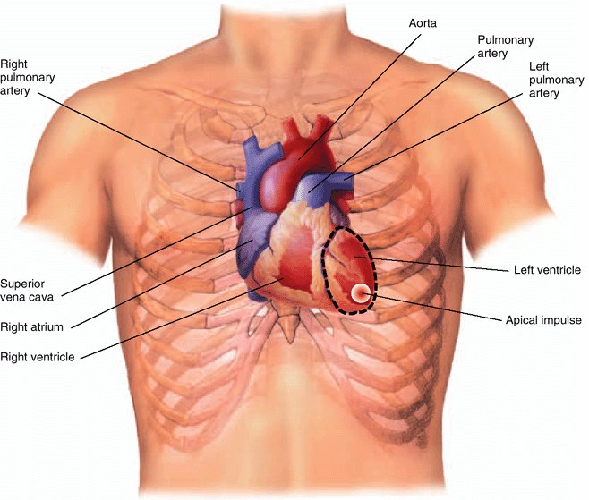
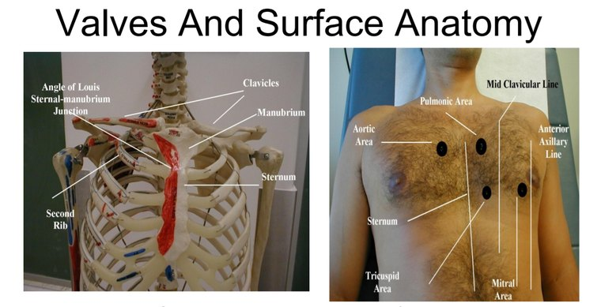
The peripheral arteries you will palpate and auscultate are the branches of that same tree: carotid, brachial, radial, ulnar, the abdominal aorta with its renal and iliac branches, femoral, popliteal, dorsalis pedis and posterior tibial.
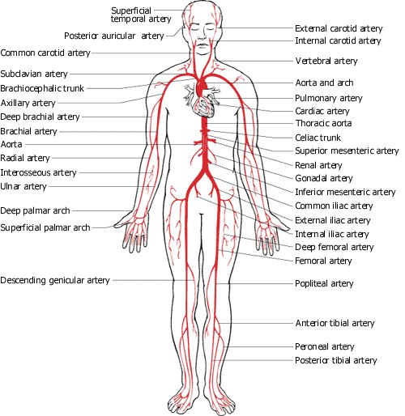
1.2 · Objective b — The cardiac history
The symptoms to ask about: chest pain, palpitations, shortness of breath (dyspnea, orthopnea, paroxysmal nocturnal dyspnea), swelling (edema) and fainting (syncope). Across all of them, it is important to quantify the patient’s baseline level of activity — ask specific questions about their day-to-day life.
Chest pain
- The most common symptom of coronary artery disease.
- Always consider angina pectoris, myocardial infarction, dissecting aortic aneurysm and pulmonary embolism.
- Distinguish cardiovascular causes from disorders of the pericardium, trachea, bronchi, parietal pleura, esophagus, chest wall, gallbladder, stomach and neck — “anything that’s in there can cause pain … but the big bad that we worry about first, cardiac.”
- Men and women with acute coronary syndrome present with the classic symptoms of exertional angina.
- Women over 65 are likely to report atypical symptoms: upper back, neck or jaw pain, shortness of breath, paroxysmal nocturnal dyspnea, nausea, vomiting, fatigue. In the lecture: keep a high index of suspicion, because “sometimes it’s just truly fatigue.”
- Technique: begin with open-ended questions, then ask for details, and ask the patient to point to the pain. Then the same questions as for any pain — where, radiation, severity out of ten, constant or intermittent, character.
How the patient points is itself a finding. She demonstrated the gesture rather than describing it: Levine’s sign, the clenched fist held against the center of the chest (part 1, 2:20–3:14, both transcripts): “if you say, can you show me where the pain is and the person goes like this — alarm bells … this is the real deal.” A vague burning line up the middle points her toward the esophagus, a single fingertip toward a rib or muscle — “it could still be cardiac. Like we don’t ever go, ah, it’s fine.” This sign is not on any slide, so it is here as the lecturer’s teaching, not as deck content. (Not to be confused with the Levine grading system for murmurs, which is on slide 56.)
Palpitations
An unpleasant awareness of the heartbeat, described as “skipping”, “racing”, “fluttering”, “pounding” or “stopping of the heart”. It may be irregular, may speed up or slow down rapidly, or may arise from increased forcefulness of contraction. Anxious and hyperthyroid patients may report palpitations, and they do not necessarily mean heart disease. Reword your questions if needed: Are you aware of your heartbeat? What does it feel like? Fast? Slow? Regular? Irregular? How long does it last? Then get an electrocardiogram.
Shortness of breath
| Term | Definition | How to pin it down |
|---|---|---|
| Dyspnea | Uncomfortable awareness of breathing that is inappropriate to a given level of exertion. Common in both cardiac and pulmonary problems. | Relate it to what the patient can still do day to day. |
| Orthopnea | Dyspnea that occurs when the patient is supine and improves when the patient sits up. | Quantify by the number of pillows used for sleeping, or the need to sleep sitting up — and ask what the pillows are for. |
| Paroxysmal nocturnal dyspnea | Episodes of sudden dyspnea and orthopnea that awaken the patient from sleep. | Usually 1–2 hours after going to bed, prompting the patient to sit up, stand up or go to the window for air. May be associated with wheezing and coughing. |
Orthopnea is not only cardiac: she pointed out it can be pulmonary or even abdominal, and described it in her own late pregnancy.
Edema
The accumulation of excessive fluid in the extravascular interstitial space. Up to 10% of body weight can accumulate before pitting edema appears. Focus questions on location, timing, setting and associated symptoms: Swelling anywhere? Where else? Worse in the morning or evening? Do your shoes get tight? Rings tight on your fingers? Eyelids puffy in the morning? Clothes tight in the middle? And consider recommending a daily morning weight.
Weight shows edema before the eye does. Her example (part 1, 8:28): 135 pounds one morning, 137 the next — “Do you think that I gained two pounds of muscle or two pounds of … fat tissue in that 24 hour period?” It is water. “So weight can be a better indicator of edema before we even notice like, hey, I’m kind of puffy or even have pitting edema … tuck that away.”
A student raised dry weight and she endorsed it, “Dry weight, tuck that away too”: dialysis and heart failure patients should know their weight at fluid balance, so a rise from it can be caught. Both transcripts carry both “tuck that away” lines.
Fainting (syncope)
A transient loss of consciousness followed by recovery. The most common cause is neurocardiogenic (vasovagal); syncope is of cardiac origin from arrhythmias in about 20% of cases. Ask: Feel faint? About to fall or pass out? Unsteady and off balance?
“Sometimes the before and after are more valuable than the fainting spell itself” (part 1, 10:48). What she taught the history to separate:
| The story | Points toward |
|---|---|
| Lightheaded, pale, clammy first — a warning prodrome, often with a trigger (hers was watching a classmate fish for a vein) | Vasovagal |
| Stood up from a crouch, tunnel vision, then down | Orthostatic |
| Sudden, no warning — “they’re here and then they’re not” | Arrhythmia — “please run and get the AED [automated external defibrillator] and then also call 911” |
| Comes round agitated and confused | A postictal phase — think seizure |
And patient education worth giving (and following): “If you feel faint, I don’t care where you are, please sit down.”
1.3 · Objective c — The cardiac cycle, heart sounds and gallops
The cardiac cycle is the period between the start of one heartbeat and the beginning of the next: alternating contraction and relaxation, divided into systole and diastole. Both are named for what the ventricles are doing.
| Systole — ventricular contraction | Diastole — ventricular relaxation and filling | |
|---|---|---|
| Pressure | Ventricular pressure exceeds atrial pressure | Ventricular pressure falls below atrial pressure |
| Closes | Mitral and tricuspid (the atrioventricular valves), helped by the papillary muscles | Aortic and pulmonic |
| Open | Aortic and pulmonic — right ventricle ejects into the pulmonary artery, left into the aorta | Mitral and tricuspid — atria empty into the ventricles |
| The sound of that closure | S1 | S2 |
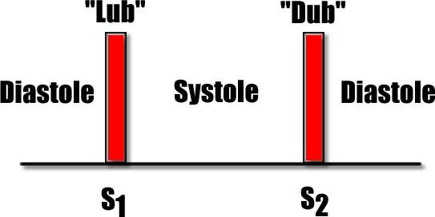
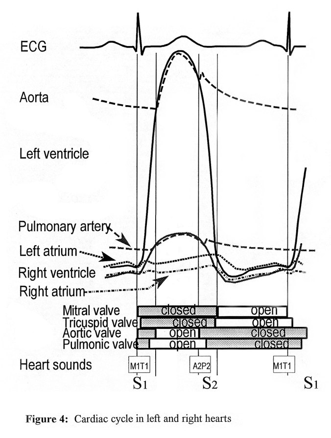
| S1 “lub” | S2 “dub” | |
|---|---|---|
| Closure of | Mitral and tricuspid valves | Aortic and pulmonic valves |
| Best heard | With the diaphragm, at the apex | With the diaphragm, at the base |
| Splitting | Usually not present | Can be heard, at Erb’s point and the pulmonic area; normal physiologic splitting is best heard at the pulmonic area |
| Against the carotid pulse | Precedes it | Follows it |
Splitting of S2
S2 has two components: aortic (A2), usually louder because of the high pressure in the aorta, and pulmonic (P2). They are normally fused as one sound during expiration and audibly separated during inspiration — that is physiologic splitting of S2, and it is normal. Audible splitting during expiration is pathologic and suggests heart disease.
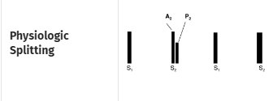
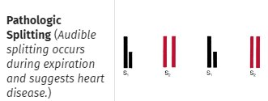
How she explained it (part 2, 20:16–21:52): on full inspiration there is more back pressure against the pulmonic valve, so P2 comes a little later; on full expiration the two sounds land together. “Spoiler alert. There’s always two sounds. It’s just whether they’re occurring over top of each other or not.” A pathologic split tends to be fixed — no respiratory variation. Slide 36 plays both (split and unsplit S2) as embedded sound files; listen to them with headphones, as she suggested.
Extra sounds in systole
| Sound | When | Character and where | Associations |
|---|---|---|---|
| Early ejection sound | Shortly after S1 | Sudden pathologic halting of the aortic and pulmonic valves as they open. High pitched, sharp clicking; diaphragm. Indicates cardiovascular disease. | Aortic: heard at base and apex; does not vary with inspiration; dilated aorta, aortic valve disease from congenital stenosis or bicuspid valve. Pulmonic: best in the 2nd and 3rd intercostal spaces; decreases with inspiration; dilated pulmonary artery, pulmonary hypertension, pulmonic stenosis. |
| Click | Mid to late systole | Usually single, may be several; at or medial to the apex and lower left sternal border. High pitched; diaphragm. | Usually mitral valve prolapse (systolic ballooning of part of the mitral valve into the left atrium). Followed by a late systolic murmur of mitral regurgitation crescendoing up to S2. |
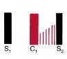
Extra sounds in diastole — the gallops and the snap
| S3 — ventricular gallop | S4 — atrial gallop | Opening snap | |
|---|---|---|---|
| Timing | After S2, early in diastole | Just before S1 | Very early diastole |
| Rhythm | Ken-TUC-ky (lub-dub-dee): S1 S2 S3 | Ten-nes-SEE (dee-lub-dub): S4 S1 S2 | A snap right after S2 |
| Listen | Bell, apex, left lateral decubitus | Dull, low pitched: bell, apex, left lateral decubitus (left sided); lower left sternal border for the right-sided one | High pitch: diaphragm. Just medial to the apex and along the lower left sternal border |
| Normal in | Children and young adults (up to 35–40), last trimester of pregnancy | Trained athletes and older age groups | Never |
| Pathologic | In adults over 40. High left ventricular filling pressures and abrupt deceleration of inflow across the mitral valve at the end of rapid filling (“blood slapping against the left ventricular wall”). Causes: decreased contractility, heart failure, volume overload from aortic or mitral regurgitation, left to right shunts | Stiff ventricle: hypertrophy or fibrosis, decreased compliance during filling after atrial contraction. Causes: hypertensive heart disease, aortic stenosis, ischemic and hypertrophic cardiomyopathy, delayed atrioventricular conduction | Abrupt deceleration as a stenotic mitral valve opens. Becomes less audible as the leaflets calcify |
Two details from the slides that are easy to lose. The right-sided S4 belongs with pulmonary hypertension and pulmonic stenosis and gets louder with inspiration; slide 42 labels the lower left sternal border S4 “left ventricular S4 (right sided)”, and its own parenthesis and causes make it the right-sided one. And an opening snap loud enough to radiate to the pulmonic area can be mistaken for P2; its high pitch and obvious snap are what separate it.
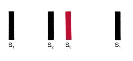
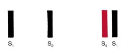
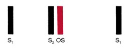
Asked in effect “how do I memorize all this?”, her answer (part 2, 23:51) was not a list: “think about what you’re hearing and when and purely break it down to that to start.” Place the sound in the cycle, then ask which valves are open and which are shut at that moment. A sound right after S1, when the aortic and pulmonic valves are opening, belongs to them; a click in mid-systole, when the mitral and tricuspid should be shut, suggests one of those opening when it should not; a snap early in diastole, when the mitral should be opening, suggests a stiff mitral valve opening late.
1.4 · Objectives d & e — The apical impulse and point of maximal impulse
The apical impulse is the brief early impulse of the left ventricular apex against the chest wall during contraction. Identified by palpating the precordium, it is recorded as the point of maximal impulse. The exception: in certain pathologic conditions — right ventricular hypertrophy, a dilated pulmonary artery, aortic aneurysm, left ventricular hypertrophy, chronic obstructive pulmonary disease — another pulsation can be more prominent than the apex beat.
- The point of maximal impulse identifies the left border of the heart.
- Normally in the fifth intercostal space at or just medial to the left midclavicular line.
- When a disorder changes the heart’s size or shape (cardiomegaly, hypertrophy) the left border shifts lateral and possibly inferior — for example the sixth intercostal space at the anterior axillary line.
- Supine, its diameter can be the size of a quarter (about 2.5 cm); it is usually palpated as brisk and tapping.
- Cannot find it supine? Roll the patient to the left lateral decubitus position. Still nothing? Ask them to exhale fully and hold for a few seconds.
- Technique from the lecture: start with four fingers, lift them one at a time until one finger sits on the most intense point.
Describing the impulse — three words, and what each means
| Term | Meaning |
|---|---|
| Hyperkinetic | From transiently increased stroke volume. Does not necessarily indicate heart disease. |
| Sustained | Ventricular hypertrophy from chronic pressure load — increased afterload. |
| Diffuse | Ventricular dilation from chronic volume overload — increased preload. |
The left ventricular impulse
| Hyperkinetic | Pressure overload | Volume overload | |
|---|---|---|---|
| Location | Normal | Normal | Displaced to the left and possibly downward |
| Diameter | About 2 cm, though increased amplitude may make it feel larger | Over 2 cm | Over 2 cm |
| Amplitude | More forceful tapping | More forceful tapping | Diffuse |
| Duration | Under two thirds of systole | Sustained | Often slightly sustained |
| Examples | Anxiety, hyperthyroidism, severe anemia | Aortic stenosis, hypertension | Aortic or mitral regurgitation, cardiomyopathy |
The right ventricular impulse
| Hyperkinetic | Pressure overload | Volume overload | |
|---|---|---|---|
| Location | 3rd, 4th, 5th left intercostal spaces | 3rd, 4th, 5th left intercostal spaces, possibly subxiphoid | Left sternal border toward the left cardiac border, also subxiphoid |
| Diameter | Not useful | ||
| Amplitude | Slightly more forceful | More forceful tapping | Slightly to markedly more forceful |
| Duration | Normal | Sustained | Normal to slightly sustained |
| Examples | Anxiety, hyperthyroidism, severe anemia | Pulmonic stenosis, pulmonary hypertension | Atrial septal defect |
Read the two tables together and the pattern is the same on both sides: pressure load thickens the wall and sustains the impulse; volume load dilates the chamber and makes it diffuse and displaced. She was candid that the right ventricular impulse is much harder to distinguish than the left, and that the impulse is never read alone — “in the same way that you wouldn’t ever just use a Weber by itself” (part 2, 3:03): a larger, sustained impulse plus a systolic ejection murmur at the aortic area puts her money on aortic stenosis.
1.5 · Objective f — The classic areas of auscultation
| Area | Where | What is loudest there |
|---|---|---|
| Aortic | Right second intercostal space, at the sternal border | Aortic valve sounds; aortic stenosis; early aortic ejection sound (with the apex) |
| Pulmonic | Left second intercostal space, at the sternal border | Physiologic splitting of S2; pulmonic ejection sound (2nd–3rd spaces); pulmonic stenosis and regurgitation |
| Erb’s point | Left third intercostal space, between the pulmonic and mitral areas | S2 splitting; hypertrophic cardiomyopathy murmur; pericardial friction rub most often |
| Tricuspid | Lower left sternal border | Tricuspid regurgitation and stenosis; hypertrophic cardiomyopathy murmur |
| Mitral | Apex — fifth intercostal space, left midclavicular line | S1; S3 and S4; mitral regurgitation and stenosis |
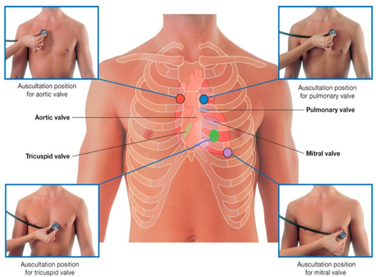
The listening areas are not over the valves. Each is the next place downstream, in the direction of blood flow, where there is no bone in the way (part 2, 12:18–18:40): “think about the direction that blood is flowing because sound is gonna travel that same direction … It’s not magic … that’s the first place where there’s not a bone block.” The same logic explains radiation: an aortic stenosis murmur loud enough can be heard in both carotids, because that is where the blood goes next — so check the aortic area before calling it bilateral carotid bruits.
1.6 · Objective g — Using the diaphragm and the bell
| Bell | Diaphragm | |
|---|---|---|
| Picks up | Low-pitched sounds | High-pitched sounds |
| How to apply | Lightly — but with no gaps | Press firmly |
| Where | At the apex, then medially along the lower sternal border | Throughout the precordium |
| Heart sounds | S3, S4 | S1, S2, early ejection sounds, clicks, the opening snap |
| Murmurs and rubs | Mitral stenosis (and the tricuspid stenosis rumble) | Aortic and mitral regurgitation, pericardial friction rubs |
Technique: a quiet setting; listen for transitory and subtle sounds; isolate each sound and listen to each in turn; close your eyes to focus; and the stethoscope must have direct contact with the skin. In the lecture: if you hear something abnormal, stay there and listen longer; if chest hair rustles under the diaphragm, hold still or part it.
1.7 · Objective h — The physical characteristics of thrills and murmurs
A murmur is the sound of turbulent blood flow over a heart valve — a “swoosh”. It results from:
- Flow across a partially obstructed valve
- Increased flow through a normal valve of a child
- Ejection into a dilated chamber
- Regurgitant flow across an incompetent valve
- Abnormal shunting of blood from one chamber to a lower pressure chamber
A thrill is the vibration or buzzing sensation a murmur produces, felt with the balls of the hand pressed against the chest wall, held still — most easily in the position that accentuates the murmur. A murmur is heard; a thrill is felt. And the vessel equivalent of a murmur is a bruit: “a murmur is to a heart valve as a bruit is to a vessel”.
The seven characteristics
Timing, shape, location, radiation, intensity, pitch, quality. The working checklist from the slide: Systole or diastole? How long? Any special tests? Where loudest — base, apex, sternal border — and does it radiate? Crescendo or decrescendo? What grade? Any extra heart sounds?
Timing. Systolic falls between S1 and S2; diastolic between S2 and S1. If you cannot tell, palpate the carotid as you listen: a systolic murmur coincides with the carotid upstroke.
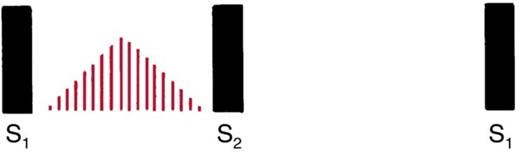
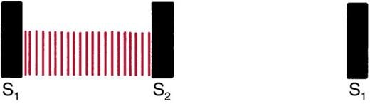
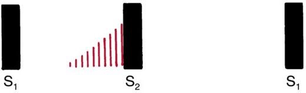
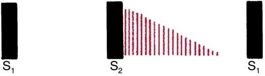
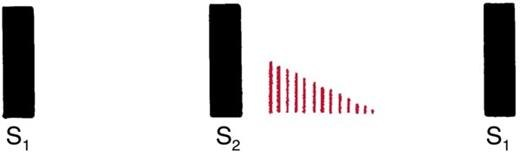
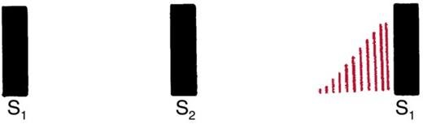
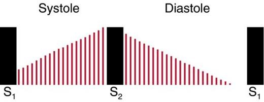
Shape is intensity over time. Crescendo-decrescendo: diamond shaped, rises then falls. Decrescendo: begins at maximum and grows silent. Plateau: unchanging. (Crescendo alone grows louder.)
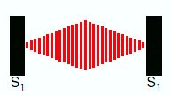
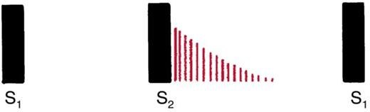
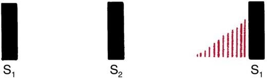
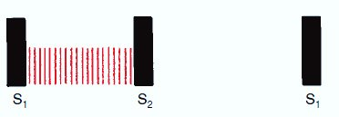
Location is where the murmur originates, found by exploring where it is loudest; describe it by intercostal space and distance from the sternum, apex, midclavicular, midsternal or axillary lines. Radiation is where else it is heard, and it tells you about the site of origin, intensity, the direction of flow and bone conduction in the thorax.
Intensity is graded on a six-point scale (the Levine grading system) and written as a fraction, for example 3/6.
| Grade | Description |
|---|---|
| 1 | Very faint, heard only after the listener has “tuned in”; may not be heard in all positions |
| 2 | Quiet, but heard immediately after placing the stethoscope on the chest |
| 3 | Moderately loud |
| 4 | Loud, with palpable thrill |
| 5 | Very loud, with thrill; may be heard with the stethoscope partly off the chest |
| 6 | Very loud, with thrill; may be heard with the stethoscope entirely off the chest |
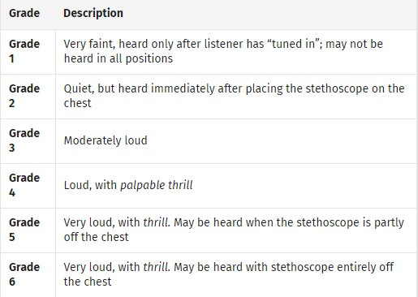
“How loud it is increases the grade. But when we also feel a thrill, we jump up … I’m palpating across the precordium and I can also palpate a thrill, we’re at a four” (part 2, 49:03). Grading is a joint judgment of the ear and the hand. Most murmurs she meets in practice are 2s and 3s, with 4s when a thrill is present.
Pitch: high, medium or low. Quality: blowing, harsh, rumbling or musical.
The sound is not the diagnosis. Document what you hear, where and when; name the disease later, in the assessment. She made this point at least three times (part 2, 23:51–25:27 and 42:09–42:56; part 3, 27:32), and both transcripts carry it:
“Murmurs are findings that tell us something and it’s our job to hunt down what that something is … the sound is not the diagnosis.” — “You’re not gonna say, I hear an aortic stenosis murmur at the right second intercostal space. That’s not how you are gonna document that. You’re gonna say, I hear a systolic ejection murmur, crescendo decrescendo, with whatever intensity, radiating to the carotids.”
Her own worked example of a physical examination line: “a grade four out of six systolic murmur, loudest at the right second intercostal space, radiates throughout the precordium, with greater intensity to the carotids” — plus the thrill and where it was felt. And for mitral stenosis: “a diastolic opening snap followed by a decrescendo murmur, best heard at the left fifth midclavicular line”, with “suspect mitral stenosis” appearing only in the differential, and an echocardiogram to decide it.
Innocent, physiologic, pathologic
| Innocent | Physiologic | Pathologic | |
|---|---|---|---|
| What it is | No physiologic or structural abnormality, usually from increased flow | From physiologic changes in body metabolism | A structural abnormality of the heart or great vessels |
| Features | Grade 1–3 of 6. Diminishes when the patient stands, sits up or does a Valsalva. Common in infancy and childhood, gone by adulthood | Examples: anemia, pregnancy, fever, hyperthyroidism | Examples: aortic stenosis, pulmonic stenosis, hypertrophic obstructive cardiomyopathy, atrial septal defect |
She refined the slide on one point (part 3, 10:34): innocent is defined by the absence of symptoms and of any structural abnormality, not by the grade — “It’s not that, oh, the grade is only one to three, so therefore it’s innocent.” A murmur with a thrill is not innocent and needs working up. And a murmur that appears in pregnancy is still worked up, even if it later proves physiologic.
Children break the rules (part 2, 39:45): more respiratory variation in heart rate, more pronounced physiologic splitting, and turbulent flow across normal valves. Unless stated otherwise, this lecture describes adults.
1.8 · Objective h — The murmurs one by one
Each lesion follows from the pathway in section 1.1 and the open-and-shut valves in section 1.3. In systole the aortic and pulmonic valves should be open and the mitral and tricuspid shut: so a systolic murmur is either a stenotic outflow valve or a leaking inflow valve. In diastole the reverse: a leaking outflow valve or a stenotic inflow valve.
Systolic murmurs
| Aortic stenosis | Pulmonic stenosis | Hypertrophic cardiomyopathy | Tricuspid regurgitation | Mitral regurgitation | |
|---|---|---|---|---|---|
| Timing | Midsystolic | Midsystolic | Midsystolic | Pansystolic (holosystolic) | Pansystolic (holosystolic) |
| Intensity | Soft or loud; with a thrill at 4/6 or above | Soft to loud; if loud, with a thrill | Variable | Varies | Soft to loud; if loud, with an apical thrill |
| Pitch | Medium, harsh | Medium, harsh | Medium, harsh | Medium, blowing | Medium to high, harsh (the left ventricle is powerful) |
| Shape | Crescendo-decrescendo | Crescendo-decrescendo | Crescendo-decrescendo | Plateau | Holosystolic |
| Location | Aortic area | Pulmonic area | Erb’s point, tricuspid area | Lower left sternal border | Apex |
| Radiation | Often to the carotids, down the left sternal border, even to the apex | Toward the left shoulder and neck, if loud | Down the left sternal border to the apex, possibly the base; never to the neck | Right sternum, xiphoid, left midclavicular line; not the axilla | To the left axilla |
| Maneuvers | Heard better sitting and leaning forward. Increases with squatting from standing and with leg raise | None | Decreases with squatting; increases with Valsalva and standing | May increase slightly with inspiration | Increases with handgrip or squatting |
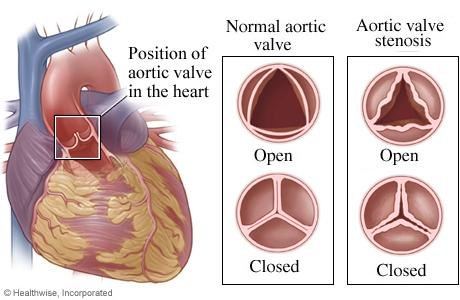
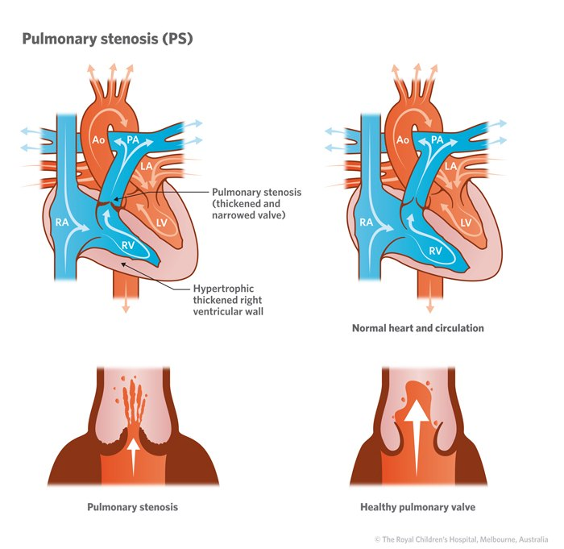
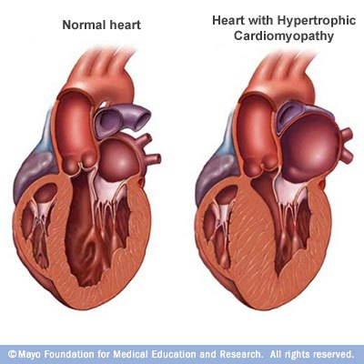
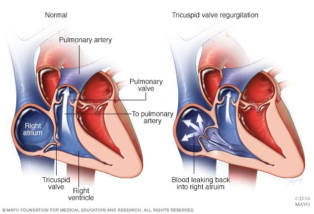
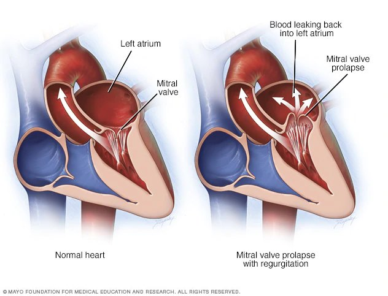
Both are pansystolic, and radiation across the precordium overlaps, so “finding the spot where it’s loudest is key” — and then the axilla (part 3, 18:12–19:28, both transcripts): “mitral regurg does radiate to the axilla. Tricuspid won’t radiate to the axilla … that can be one of your key pieces, plus the location.”
The slide says it in capitals: important to learn this murmur so you don’t sign off incorrectly on a sports physical. It is a disease of abnormally thickened myocardium, most commonly the interventricular septum, with the muscle fibers not aligned properly: a high-pitched, crescendo-decrescendo, midsystolic murmur heard best at the left lower sternal border, because it is a muscle problem rather than a valve one.
She ranked it above the other ejection murmurs (part 3, 16:50, both transcripts): “aortic stenosis, pulmonic stenosis, they get to a point where we’re worried about them, but [hypertrophic obstructive cardiomyopathy], we’re worried about it, period. The moment we recognize that this could be [it], we’re worried.” Her two patients with the same murmur: an 80-year-old with fatigue and presyncope (leans toward aortic stenosis), and an 18-year-old whose brother has the disease, whose murmur gets louder with Valsalva — “alarm bells … I’m sending you for an echocardiogram … no activity until you have that done.”
Aortic stenosis is the one you will meet most. “I’ve mentioned this one like 50 times already. You will hear this one a lot” (part 3, 12:53). Her advice at clinical sites: when a patient has a known murmur or mechanical valve, spend time listening and feeling for the thrill.
Diastolic murmurs
Less common and harder to hear than systolic murmurs — and, in the lecture, more often pathologic: “when you hear a diastolic murmur … they’re more often going to be somewhat pathologic in nature.”
| Aortic regurgitation | Pulmonic regurgitation | Mitral stenosis | Tricuspid stenosis | |
|---|---|---|---|---|
| Timing | Early diastolic | Early diastolic | Mid to late diastolic | Mid to late diastolic |
| Intensity | Grade 1–3 | Grade 1–3; may increase with inspiration | Grade 1–4 | Grade 1–4 |
| Pitch | High, blowing — may be mistaken for breath sounds | High | Low-pitched rumble — use the bell | Low-pitched rumble, follows an opening snap — use the bell |
| Shape | Decrescendo | Decrescendo | Decrescendo | Decrescendo |
| Location | Aortic area, down the left intercostal spaces | Pulmonic area | Apex | Left lower sternal border, near the xiphoid |
| Radiation | To the apex, if loud | None | Little or none | Little or none |
| Maneuvers | Sitting, leaning forward, breath held after exhalation | None | Bell at the apical impulse, left lateral decubitus | The slide repeats the mitral line: bell, left lateral decubitus |
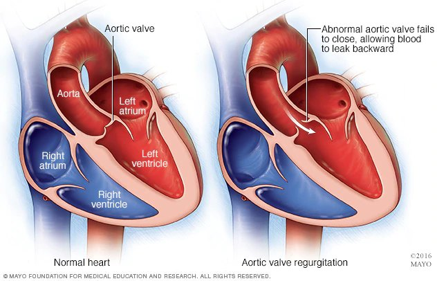
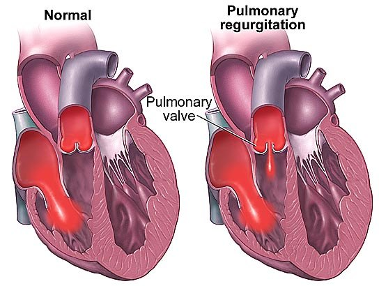
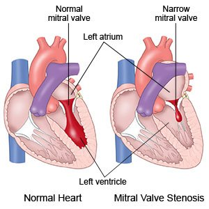
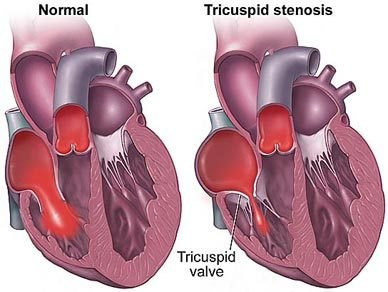
Pericardial friction rub
From inflammation of the pericardial sac (pericarditis): a scratchy, scraping noise heard intermittently through both diastole and systole. Variable intensity; high pitch — diaphragm; plateau; most often heard at Erb’s point; little radiation. May increase when the patient leans forward, exhales and holds the breath. In the lecture: the visceral and parietal pericardium normally glide silently; inflamed, they rub with every beat.
1.9 · Objective i — Maneuvers to evaluate murmurs
Positions bring the heart closer to the stethoscope:
- Left lateral decubitus — for the apex: S3, S4, mitral stenosis. Lower the head of the bed, turn the patient to the left, and reach over them.
- Seated, leaning forward, exhale completely and hold — along the sternal border: aortic regurgitation, the pericardial friction rub.
Maneuvers go further: they change filling and resistance so that murmurs that sound alike separate. Above all they distinguish the murmurs of mitral valve prolapse and hypertrophic obstructive cardiomyopathy from aortic stenosis.
| Maneuver | What it does | Hypertrophic cardiomyopathy | Aortic stenosis | Mitral valve prolapse |
|---|---|---|---|---|
| Valsalva (strain) — forceful expiration against a closed airway; the supine patient bears down, or pushes against your hand on the mid-abdomen | Raises intrathoracic pressure, decreases left ventricular filling (preload) | Increases | Softer or no change | Click earlier, murmur lengthens |
| Standing quickly from squatting | Blood moves to the legs: less venous return, less preload | Louder | Softer | Click earlier, murmur lengthens |
| Squatting from standing, or leg raise | Blood stored in the legs returns: more venous return, more preload | Softer (less outflow obstruction) | Louder (more blood rushing past the narrow valve) | Moved later in systole; murmur shortens |
| Isometric handgrip | Raises vascular resistance | Increases the systolic murmurs of mitral regurgitation, pulmonic stenosis and ventricular septal defect, and the diastolic murmurs of aortic regurgitation and mitral stenosis | ||
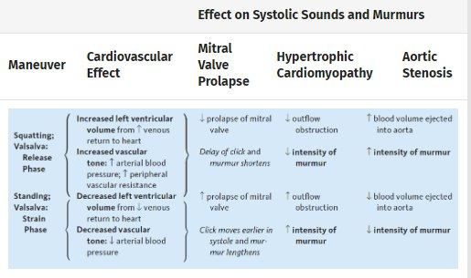
Her practical notes (part 3, 7:24–8:54): the squat-and-stand maneuvers need you and the patient to move together, and will be practiced in lab; if a patient cannot squat, raise their legs; for handgrip, have them squeeze a rolled-up shirt or a washcloth. And her advice for learning the table: think through what each maneuver does to venous return and resistance, and the direction of each change follows.
1.10 · Objective j — Arterial versus venous findings
Overview. Inspect the upper and lower extremities; palpate the pulses and lymph nodes; auscultate the carotid (if not done with the heart), the abdominal arteries and the femoral arteries.
Inspection
- Size, symmetry, venous pattern, hair growth pattern, edema.
- Skin color: erythema, cyanosis, jaundice, pigmentation changes, ulceration.
- Capillary refill: press on the fingernail, release, and time the return of pink — it should be 2–3 seconds.
- Quincke’s pulse (sign): after releasing the pressure, the capillary bed flashes red to pale with each heartbeat.
- Always compare one extremity with the other: is the swelling unilateral or bilateral? Note relative size and the prominence of veins, tendons and bones. She added that unilateral findings, especially arterial ones, may need urgent work-up.
- Look for ulcerations, skin discoloration, skin thickening and varicosities (mild to severe dilatation of veins, mainly in the lower extremities).
Chronic arterial versus chronic venous insufficiency
| Chronic arterial insufficiency | Chronic venous insufficiency | |
|---|---|---|
| Pain | Pain with walking progressing to pain at rest (claudication) | No pain |
| Color | Pale or dusky red; foot pallor on elevation, dusky rubor on dependency | Cyanotic or brownish pigmentation (hemosiderin staining); cyanosis of the foot when dependent |
| Temperature | Cool to touch | Normal |
| Edema | None | Pitting edema |
| Skin | Thin, shiny; loss of hair | Thickening; stasis dermatitis, purpura, varicosities |
| Ulcer | Painful (unless there is neuropathy), at the distal toes | Around the ankles — medial and lateral malleolus; small, painful granulation tissue and fibrin; irregular borders, flat or steep |
| Gangrene | May develop | Rare |
| Pulses | Decreased | Normal |
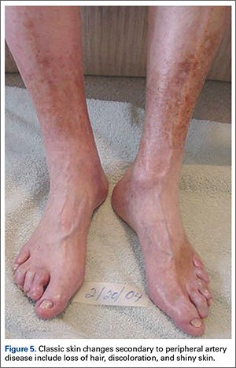
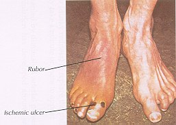
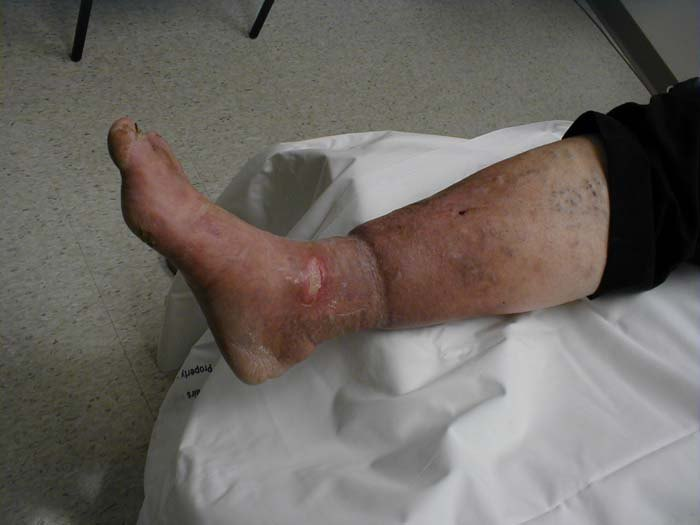
Palpating the pulses
Grade the amplitude and always compare both sides (the slide adds five exclamation marks):
| Grade | 4+ | 3+ | 2+ | 1+ | 0 |
|---|---|---|---|---|---|
| Meaning | Bounding | Increased | Brisk, normal | Faint or diminished | Absent |
Absent pulses may suggest an arterial disorder from atherosclerosis or systemic embolism; consider small vessel disease such as diabetes mellitus. Pulses may be hard to feel in patients who are obese or muscular — which does not mean they are absent.
| Pulse | Where and how |
|---|---|
| Carotid | Lateral to the trachea. Ask the patient to hold their breath, auscultate before palpating, and palpate one at a time |
| Brachial | Medial to the biceps tendon at the antecubital fossa |
| Radial | Lateral portion of the wrist |
| Ulnar | Medial wrist, deep on the flexor surface; partly flexing the wrist helps. A normal ulnar pulse may not be palpable |
| Femoral | Below the inguinal ligament, midway between the anterior superior iliac spine and the pubic symphysis. Palpated under clothing (in lab and testing it is done over clothing, said aloud to the facilitator) |
| Pulse lag | Radial and femoral simultaneously; a lag suggests coarctation of the aorta |
| Popliteal | Harder to feel and may not be felt — not an issue if the distal pulses are present. (1) Knee flexed and relaxed, fingertips pressed deep in the midline of the fossa; (2) patient prone, knee at 90 degrees, thumbs pressed deep |
| Dorsalis pedis | Dorsum of the foot, lateral to the extensor tendon of the great toe |
| Posterior tibial | Behind the medial malleolus |
| Abdominal aorta | Press deeply in the upper abdomen; she stressed that what you want is its size |
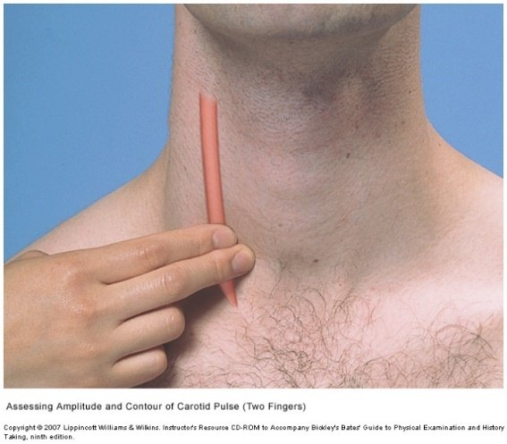
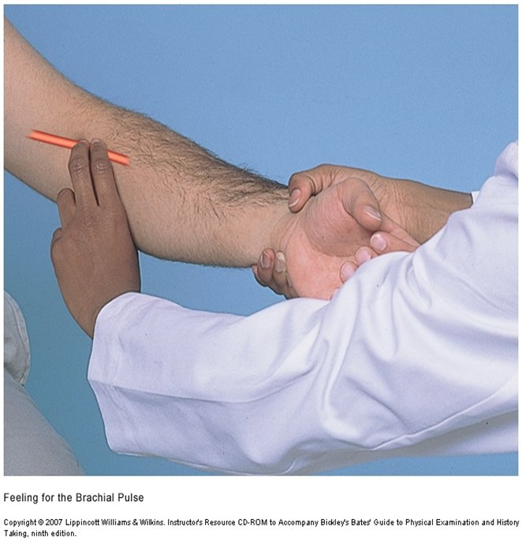
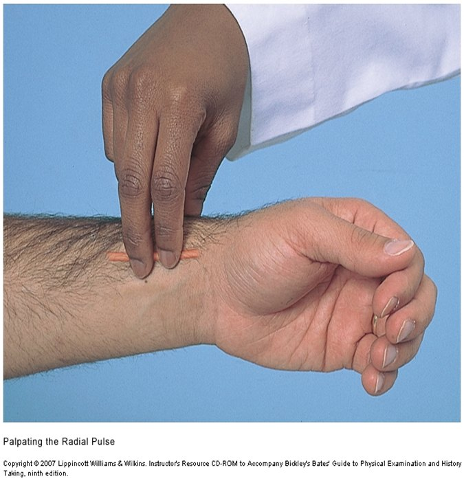
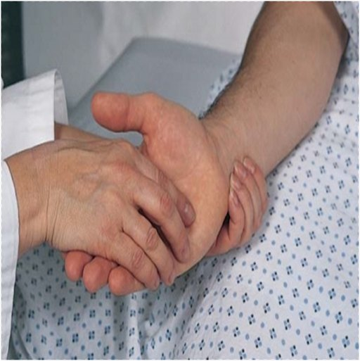
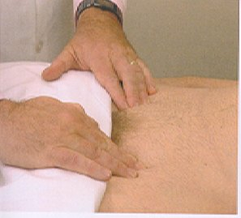
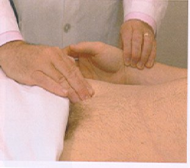
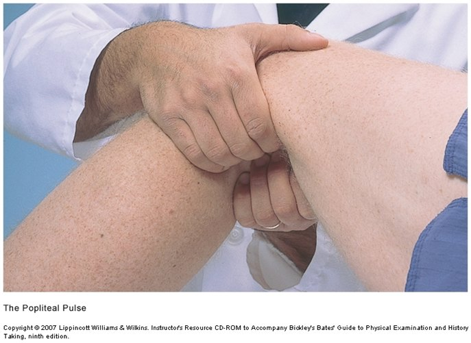
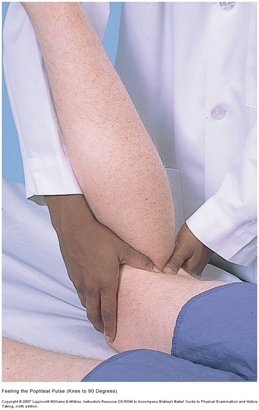
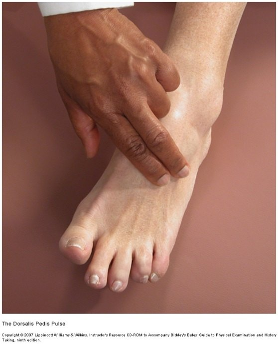
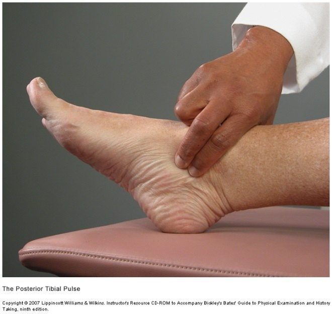
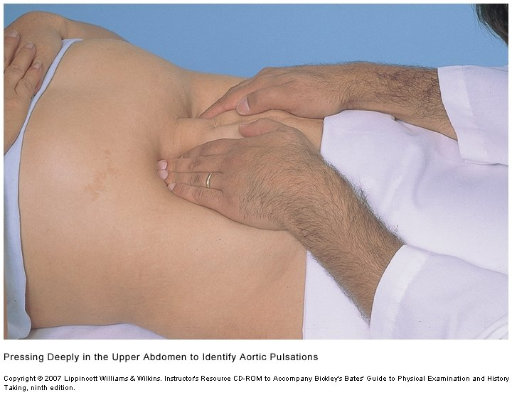
Auscultating for bruits
A bruit is a murmur-like sound of vascular rather than cardiac origin. Listen at:
| Site | Where |
|---|---|
| Aorta | Midline of the abdomen, above the umbilicus (the slide’s line breaks off at “halfway between umbilicus”; its picture puts the site in the upper midline) |
| Renal | 3–4 cm lateral to the aorta |
| Iliac | 3–4 cm lateral to the umbilicus and about 2 cm inferior |
| Femoral | Directly over the femoral artery, halfway between the anterior superior iliac spine and the pubic symphysis |
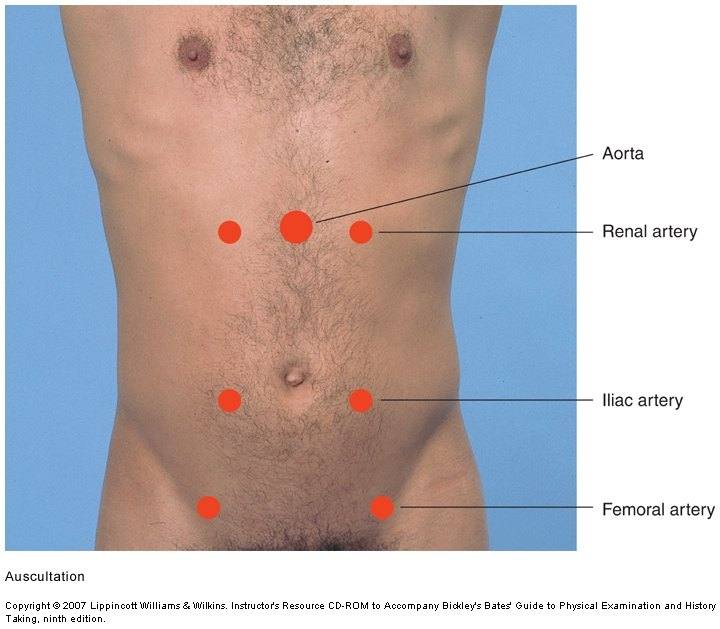
A bruit means narrowing, and so possible arterial insufficiency of whatever that vessel supplies — a renal bruit raises the question of whether the kidneys are getting enough blood.
Special techniques
Allen test — evaluates the arterial supply of the hand by assessing the patency of the radial and ulnar arteries:
- Compress both the radial and the ulnar artery.
- Ask the patient to clench the fist for 30 seconds.
- Occlude both arteries, then ask the patient to open the fist.
- Release the ulnar artery and watch the hand fill — that tests the patency of the ulnar artery.
- Repeat, releasing the radial artery, to test its patency.
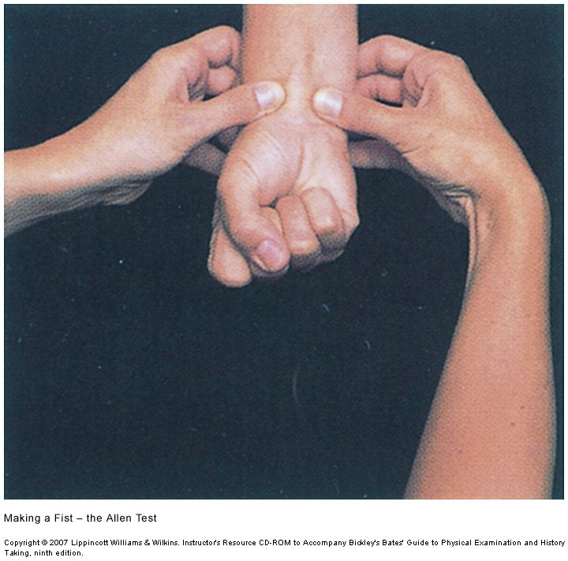
In the lecture she tied it to its use: it is done before drawing an arterial blood gas, to be sure the ulnar artery can supply the hand if the radial is injured.
Ankle brachial index — the ratio of blood pressures in the foot and arm, calculated for each leg: the higher of the two ankle pressures (dorsalis pedis and posterior tibial) divided by the brachial systolic pressure. Record it to two decimal places. It is accurate at detecting the fall in pressure distal to an arterial stenosis, and is used to assess peripheral arterial disease (pain, claudication, numbness, weakness, weak or absent dorsalis pedis and posterior tibial pulses, distal pallor).
| Step | Brachial pressure | Ankle pressures |
|---|---|---|
| Set-up | Patient supine and resting 10 minutes; cuff on the arm | Cuff on the ankle proximal to the malleoli |
| Find the pulse | Ultrasound (Doppler) over the brachial pulse | Ultrasound over the dorsalis pedis, then repeat over the posterior tibial |
| Measure | Inflate to 20 mm Hg above the last audible pulse; deflate slowly, about 1 mm Hg per second; record the pressure at which the pulse becomes audible again | |
| Repeat | Two measurements in each arm; the average is that arm’s brachial pressure | Repeat on the opposite leg |
| Value | Interpretation |
|---|---|
| Over 1.40 | Suggests a noncompressible, calcified vessel |
| 0.90–1.40 | Normal |
| Under 0.90 | Suggestive of peripheral arterial disease |
| Under 0.50 | Suggests severe peripheral arterial disease |
Homans sign — a test for deep vein thrombosis: quickly and forcefully dorsiflex the foot at the ankle with the knee bent. Positive: pain behind the knee.
Perform it when you already suspect a deep vein thrombosis, on the leg you are worried about — not as a screening rule-out (part 3, 50:13–52:34, both transcripts). Her example stacked the risk factors: a long flight back from New Zealand without getting up, a smoker on birth control, a recently injured ankle, unilateral swelling. “You perform this test and it’s positive and you’re like, that just confirms my suspicion. If it’s negative, you’re like, I’m still worried.” Deep vein thrombosis itself is taught in the Clinical Medicine and Surgery vascular lectures.
Technique: go by the slide. In the recording she described squeezing the calf and dorsiflexing the foot; the slide’s maneuver is quick, forceful dorsiflexion with the knee bent, and its positive finding is pain behind the knee.
1.11 · Objective k — The physical examination findings of peripheral edema
- Definition: excessive fluid in the extravascular interstitial space; up to 10% of body weight can accumulate before pitting appears.
- Edema obscures veins, tendons and bony prominences — which is how it shows on inspection.
- Always compare sides: unilateral or bilateral?
- Pitting is the depression caused by the pressure of the thumb. Press firmly with the thumb for at least 2 seconds over the dorsum of the foot, behind the medial malleolus, or over the shins — sites with bone beneath, so there is something to press against.
- Describe both the depth (the grade) and the extent — how far up the edema reaches. She described pitting up to the flanks along the dependent areas. Edema can also be non-pitting.
- Edema is not always a vascular finding: heart failure produces it with healthy vessels. Venous stasis edema from the knee down, 3+ and nowhere else, is the pattern that points to the veins.
| Grade | Depth | Description |
|---|---|---|
| 0+ | — | No pitting edema |
| 1+ | 2 mm | Mild; the depression disappears rapidly |
| 2+ | 4 mm | Moderate; disappears in 10–15 seconds |
| 3+ | 6 mm | Moderately severe; may last more than 1 minute |
| 4+ | 8 mm | Severe; can last more than 2 minutes |
1.12 · Objective l — The complete and focused cardiovascular examination
The order: inspection (including measuring the jugular venous pressure), palpation, auscultation, then special techniques. The jugular venous pressure is looked for while you inspect the neck and the carotids: find the pulsation and measure its highest point. It will be demonstrated in lab.
| Preparing yourself | Preparing the patient |
|---|---|
| Stethoscope; ruler, penlight and tongue depressor added for the vascular findings. Enough light and exposure — tangential lighting during inspection, so every contour shows. A quiet room. Warm hands and short nails. | The patient in a gown. The examination is never done over clothing. Remember positioning — supine at about 30 to 45 degrees, left lateral decubitus, seated and leaning forward. |
On a reluctant patient, the lecture’s advice: offer to place the stethoscope under the gown while it stays covered; the aim is nothing between the stethoscope and the skin. If a patient refuses to be examined, do not examine them — document it thoroughly.
Complete versus focused. The complete examination runs everything above: the precordium in every area with both diaphragm and bell, the extra sounds, the peripheral vascular examination head to toe. The focused examination keeps the same order and technique but chooses: the areas and positions that match the complaint, and the maneuvers that answer the question you have — “depending on what you want to find, you’re going to pick and choose which ones you do” (part 3, 0:00).